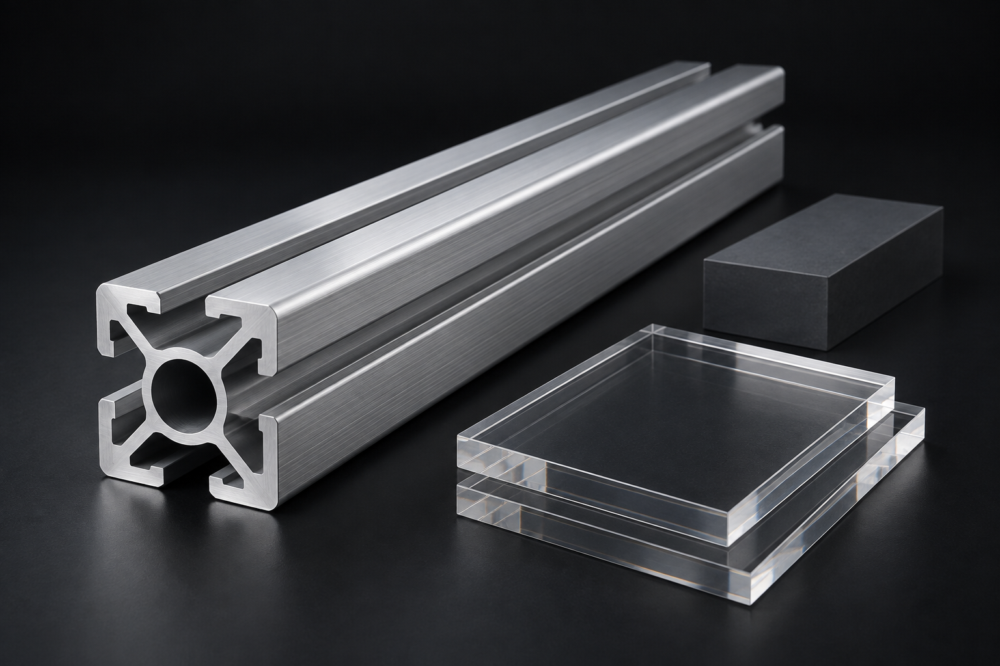
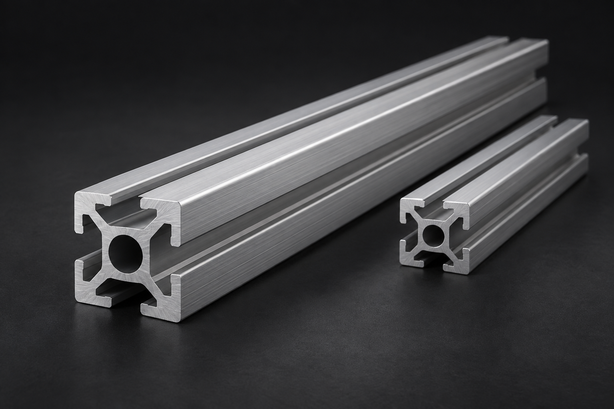
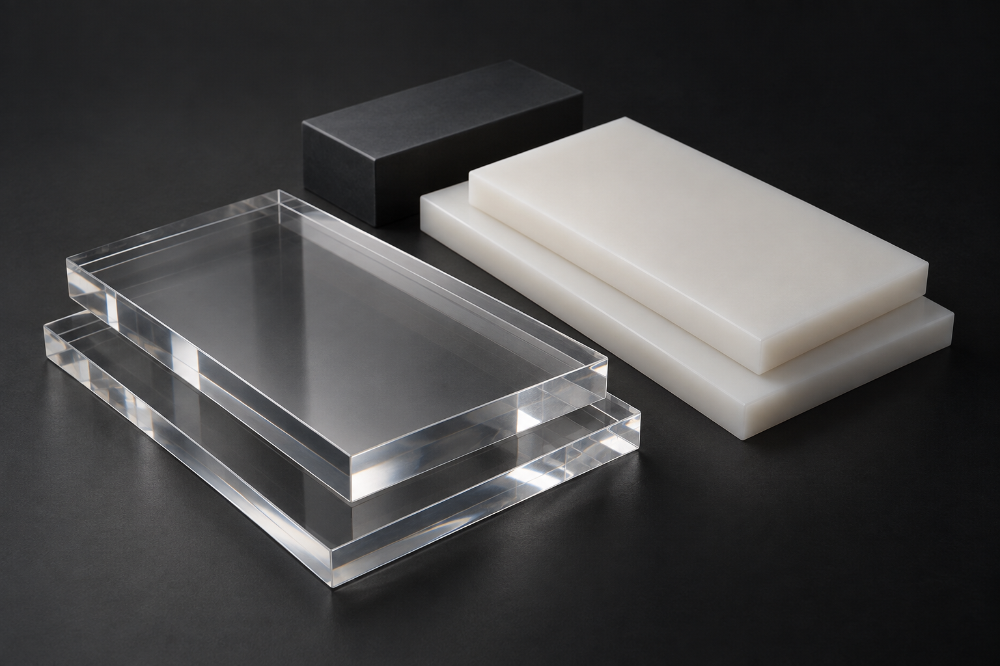

PROFILE사진 등록 예정01
프로파일
준비 중GTS KOREA — MATERIALS & PROCESSING
프로파일부터 아크릴, 다양한 수지류까지.
GTS KOREA의 가공 서비스를 만나보세요.

GTS KOREA는 프로파일, 아크릴 등 수지류 가공을 합니다.
필요한 소재와 형태, 사용 목적을 알려주세요.
구체적인 가공 내용은 문의를 통해 함께 확인합니다.
어떤 소재로 무엇을 만들고 싶으신가요?
필요한 가공부터 이야기해 주세요.

필요한 규격과 형태에 맞춘
프로파일 가공을 문의해 주세요.

아크릴을 포함한 다양한 수지류,
소재와 용도에 맞는 가공을 문의해 주세요.
가공 가능 여부와 세부 사양은 상담 후 확인됩니다.
제품과 가공 사례를 소개할 공간입니다.
실제 사진과 상세 내용을 준비하고 있습니다.
아직 상세 사양이 정해지지 않아도 괜찮습니다.
현재 준비된 내용부터 작성해 주세요.
원하는 소재와 제품의
사용 목적을 알려주세요.
대략적인 크기와 필요 수량,
희망 일정을 적어주세요.
도면 보유 여부나 참고할 내용 등
가공에 필요한 정보를 남겨주세요.
소재와 가공에 대한 문의,
GTS KOREA에 남겨주세요.
경기도 화성시 팔탄면 푸른들판로 416-61